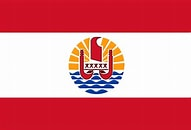
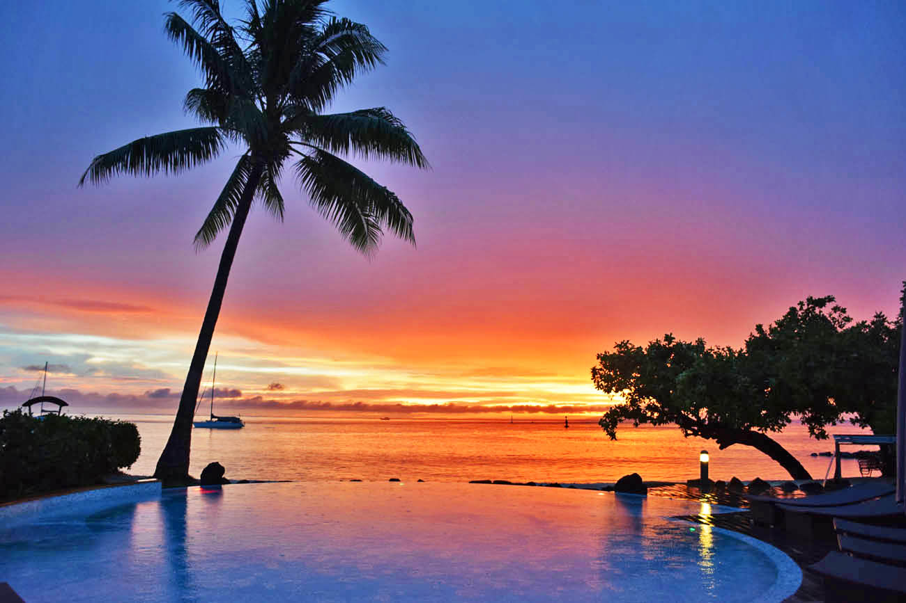
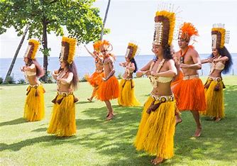

Bandeira da Polinésia Francesa
A bandeira da Polinésia Francesa reflete a identidade cultural e a ligação política dessa coletividade ultramarina com a França. Ela possui duas faixas horizontais vermelhas, uma no topo e outra na parte inferior, e uma faixa branca ao centro onde se encontra o brasão oficial da região.
A bandeira da Polinésia Francesa é reconhecida oficialmente e utilizada em conjunto com a bandeira francesa, reforçando tanto a autonomia cultural quanto a ligação administrativa com a França.
Sobre a Polinésia Francesa
A Polinésia Francesa é uma coletividade ultramarina da França localizada no Oceano Pacífico, composta por cinco arquipélagos e cerca de 118 ilhas, famosas por suas lagoas turquesa, praias de areia branca e ricas tradições culturais. A capital é Papeete, situada na ilha de Taiti, a maior e mais populosa do território.
A geografia da Polinésia Francesa é diversa, com montanhas vulcânicas, florestas tropicais e extensos recifes de coral. O clima é tropical, com uma estação chuvosa que vai de novembro a abril.
Atividades populares na Polinésia Francesa incluem mergulho, snorkeling, passeios de canoa, trilhas em montanhas vulcânicas e a oportunidade de conhecer a cultura polinésia em eventos de dança e música tradicionais, como o famoso festival Heiva.
Atrações Principais da Polinésia Francesa
- Atol de Fakarava
- Atol de Rangiroa
- Ilha de Huahine
- Ilha de Tahaa
O Atol de Fakarava é um Patrimônio da Humanidade da UNESCO, famoso por suas águas límpidas e rica biodiversidade marinha. É um destino ideal para mergulho, onde você pode encontrar tubarões, raias e uma variedade de peixes tropicais.
Rangiroa é um dos maiores atóis do mundo e é famoso por suas lagoas de águas cristalinas e rica vida marinha. É um paraíso para mergulhadores, oferecendo a oportunidade de observar tubarões e cardumes de peixes em seus recifes vibrantes.
A Ilha de Huahine é conhecida por suas tradições culturais, paisagens naturais e águas azuis. Os visitantes podem explorar templos antigos, fazer caminhadas nas montanhas e desfrutar de atividades aquáticas em suas praias tranquilas.
A Ilha de Tahaa é famosa por suas plantações de baunilha e beleza natural. Os visitantes podem fazer passeios de barco ao redor da ilha, visitar as plantações de baunilha e aproveitar o snorkeling em suas águas cristalinas.
Cultura Polinésia
A cultura da Polinésia Francesa é rica e vibrante, com tradições que incluem danças, música e celebrações. Os habitantes locais valorizam a hospitalidade e preservam costumes como o "tatau" (tatuagem tradicional) e a "dança do fogo".
As danças polinésias, como o "ʻOri Tahiti", fazem parte essencial das celebrações e eventos culturais, muitas vezes acompanhadas de músicas tradicionais e instrumentos como o "pahu" (tambor) e o "toere" (tambor de madeira).
A gastronomia da Polinésia Francesa é uma fusão de sabores do Pacífico e influências francesas, destacando-se pratos à base de peixes, frutas tropicais e leite de coco. Um prato típico é o "poisson cru", que consiste em peixe cru marinado em suco de limão e leite de coco.
Endereços Notáveis na Polinésia Francesa
Informações sobre a Polinésia Francesa
- Clima
- Vegetação
- Relevo
- Fauna
- População
- IDH
- Tipo de Governo
- Moeda
- PIB
A Polinésia Francesa possui um clima tropical, com temperaturas médias variando entre 23°C e 30°C. A estação chuvosa vai de novembro a abril, enquanto a estação seca ocorre de maio a outubro.
A vegetação da Polinésia Francesa é rica e diversificada, com florestas tropicais, plantas endêmicas e extensos recifes de coral. As ilhas possuem várias espécies de árvores, incluindo coqueiros e árvores de pão.

O relevo da Polinésia Francesa é montanhoso, com muitas ilhas apresentando picos altos e vales profundos, criando paisagens deslumbrantes. As ilhas são formadas principalmente por rochas vulcânicas.
A fauna da Polinésia Francesa é diversa e única, com várias espécies endêmicas. Destacam-se aves coloridas e uma rica vida marinha em recifes de corais, com peixes tropicais e tartarugas.
As florestas abrigam lagartos e borboletas. Essa biodiversidade enfrenta ameaças, tornando a conservação essencial.
A população da Polinésia Francesa é de aproximadamente 280.000 habitantes, composta principalmente por polinésios, franceses e outras etnias.
O Índice de Desenvolvimento Humano (IDH) da Polinésia Francesa é considerado alto, com um valor em torno de 0,8, refletindo melhorias nas áreas de saúde, educação e renda.
A Polinésia Francesa é uma coletividade ultramarina da França, com um governo autônomo. O Presidente do Governo é o chefe de governo, enquanto o Presidente da Assembleia é o chefe de estado.
Constituição: A constituição do território é baseada na legislação francesa, garantindo direitos fundamentais e a autonomia do governo local.
Separação dos Poderes: O governo é dividido em Executivo e Legislativo, assegurando um sistema de freios e contrapesos.
Direitos Humanos: A legislação garante direitos e liberdades fundamentais, incluindo liberdade de expressão e de associação.
Eleições Justas: As leis garantem a realização de eleições livres e justas, com um sistema de representação proporcional.
O PIB da Polinésia Francesa é estimado em cerca de 3,5 bilhões de dólares, com o turismo como principal motor econômico, seguido pela agricultura e pesca. O PIB per capita é de aproximadamente 12.000 dólares, refletindo desafios como a diversificação econômica e a dependência do turismo.
A moeda oficial da Polinésia Francesa é o franco polinésio (XPF). Em relação à conversão, 1 franco polinésio costuma valer cerca de 0,22 reais brasileiros.
Média de Gastos na Polinésia Francesa
A média de gastos na Polinésia Francesa pode variar bastante dependendo do estilo de viagem. Aqui está uma estimativa:
Acomodações
- Econômicos: $50 a $150 por noite.
- Médio porte: $200 a $400 por noite.
- Luxuosos: $600 a $1.500 por noite.
Alimentação
- Restaurantes locais: $15 a $30 por refeição.
- Restaurantes de médio porte: $30 a $70 por refeição.
Transporte
- Transporte local: $2 a $10 por viagem.
- Aluguel de carro: $60 a $120 por dia.
Atividades
- Excursões e passeios: $70 a $200 por dia, dependendo da atividade.
Estimativa Mensal
- Econômica: cerca de $2.000 a $3.000.
- Médio porte: cerca de $4.000 a $7.000.
- Luxo: $10.000 ou mais.
Esses valores são aproximados e podem variar conforme a época do ano e as escolhas individuais.
Público-Alvo do Turismo na Polinésia Francesa
Turistas em Busca de Relaxamento
Pessoas que desejam férias tranquilas em ilhas paradisíacas e resorts de luxo.
Aventureiros
Viajantes interessados em atividades como mergulho, snorkeling, trilhas e esportes aquáticos.

Casais e Lua de Mel
Casais atraídos por paisagens deslumbrantes e um ambiente romântico para celebrar momentos especiais.

Famílias
Famílias em busca de experiências culturais e atividades ao ar livre em um ambiente seguro e acolhedor.
Ecoturistas
Visitantes que desejam explorar a biodiversidade local e participar de atividades sustentáveis.
Vantagens e Desvantagens de Visitar a Polinésia Francesa
Vantagens
- Belezas Naturais: Ilhas paradisíacas, lagoas azul-turquesa e paisagens deslumbrantes.
- Cultura Rica: Tradições vibrantes, danças e festivais autênticos que refletem a herança polinésia.
- Clima Tropical: Temperaturas agradáveis e clima ensolarado durante todo o ano.
- Atividades Diversificadas: Mergulho, snorkeling, caminhadas, e experiências culturais únicas.
- Hospitalidade: Os polinésios são conhecidos por sua calorosa hospitalidade e acolhimento.
Desvantagens
- Custo: Viagens e hospedagem podem ser bastante caros, especialmente em resorts.
- Acesso Limitado: Algumas ilhas são remotas e de difícil acesso, exigindo transporte adicional.
- Períodos de Chuva: A estação chuvosa, de novembro a abril, pode trazer chuvas intensas e ciclones.
- Infraestrutura em Desenvolvimento: Em algumas áreas, a infraestrutura pode ser limitada, afetando a experiência do visitante.
- Impacto Ambiental: O turismo pode ter efeitos negativos sobre a biodiversidade e ecossistemas locais.